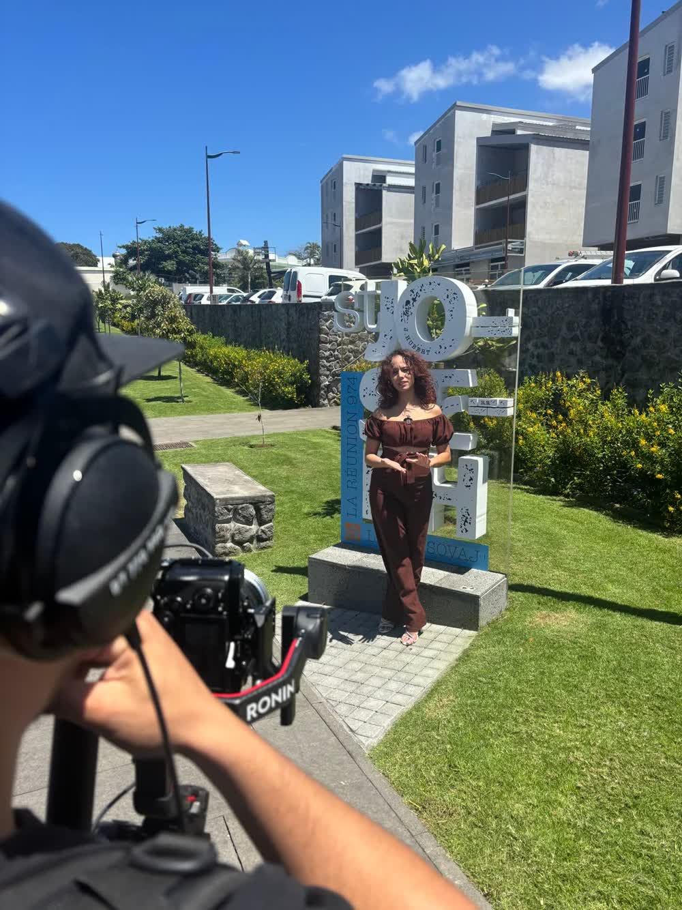

Film institutionnel & vidéo corporate d'entreprise à La Réunion
Une vidéo bien faite dit en quatre-vingt-dix secondes ce qu'une plaquette met dix pages à ne pas réussir à transmettre. Le film institutionnel et la vidéo corporate sont devenus l'outil de communication le plus efficace pour une entreprise réunionnaise : sur un site, sur LinkedIn, en salon ou en interne, l'image animée capte et convainc. Voici à quoi elle sert vraiment, et comment la réussir.
Film institutionnel, vidéo corporate : quelle différence ?
Le film institutionnel présente l'entreprise dans son ensemble : son histoire, ses valeurs, ses métiers, ses équipes. C'est la vidéo « qui sommes-nous », celle qu'on met en avant sur la page d'accueil ou qu'on projette en ouverture d'un événement. La vidéo corporate est une famille plus large : elle englobe aussi les vidéos de recrutement (marque employeur), les présentations de produit ou de service, les témoignages clients et les reportages métier. Point commun : elles servent l'image et le message de l'entreprise, pas seulement le souvenir d'un événement.

À quoi sert concrètement une vidéo d'entreprise ?
- Convaincre sur le web : une vidéo sur une page augmente le temps de visite et la confiance — on comprend qui vous êtes en quelques secondes ;
- Recruter : la marque employeur en vidéo montre l'ambiance et les équipes bien mieux qu'une offre d'emploi — un argument décisif à La Réunion où les bons profils se disputent ;
- Vendre : une démonstration de produit ou un témoignage client filmé porte le message commercial partout, tout le temps ;
- Fédérer en interne : une vidéo de vœux, un reportage sur un projet, un film d'anniversaire d'entreprise renforcent la fierté d'appartenance ;
- Rayonner en événement : projetée en séminaire ou en convention, elle installe le niveau et donne le ton.
Ce qui fait une vidéo corporate réussie
Trois ingrédients. D'abord un message clair : une vidéo qui veut tout dire ne dit rien — on choisit un angle et une idée forte. Ensuite une vraie écriture : un scénario, un fil, un rythme, pas une succession de plans. Enfin une production soignée : caméras 4K, drone pour les vues de l'île, son propre, éclairage, étalonnage. À La Réunion, le décor naturel est un cadeau — encore faut-il savoir le filmer au bon moment de la journée.
L'atout Pull Up : l'entreprise qui vous connaît déjà
Parce que nous organisons aussi vos séminaires, vos team buildings et vos soirées, nous connaissons votre entreprise avant même de sortir la caméra. Cela change tout : nous savons quoi mettre en valeur, qui filmer, quels moments racontent le mieux votre histoire. Et si votre film mérite d'être vu largement, nous savons l'amplifier avec des créateurs de contenu locaux. Pour l'événementiel filmé, voyez aussi notre article sur l'aftermovie.
Un film institutionnel ou une vidéo corporate à produire à La Réunion ? Parlons de votre projet au 0693 81 78 82 — devis sous 48 h, et toutes nos réalisations sont sur productionvideo974.re.